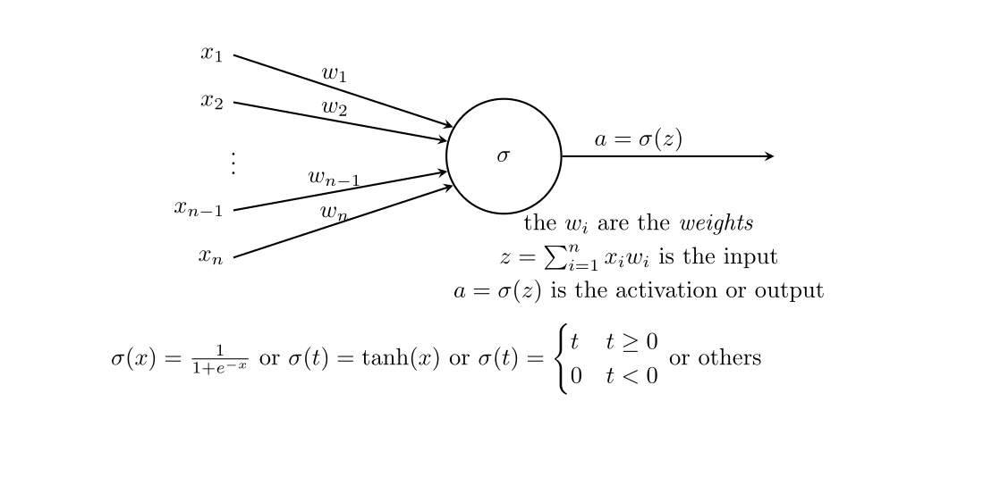
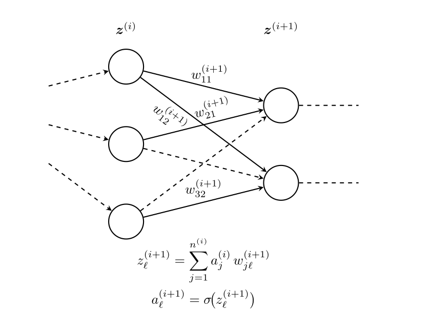
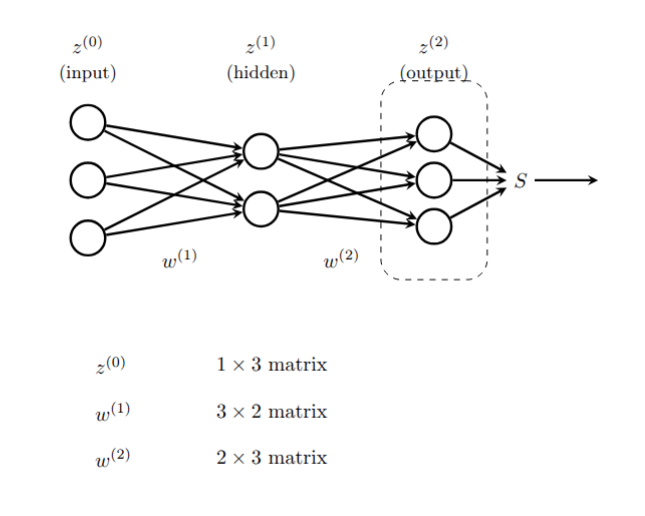
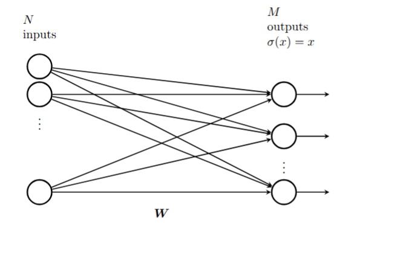
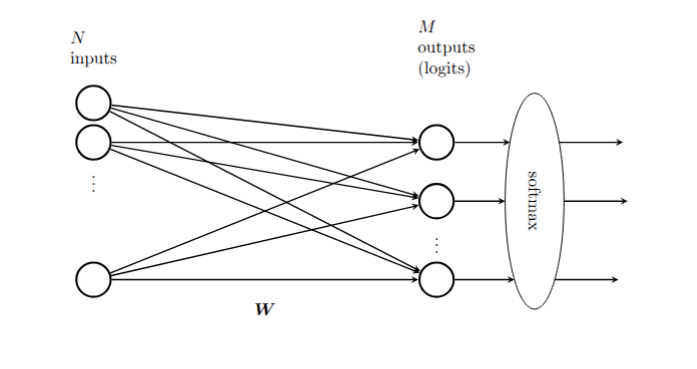

9 Neural Networks
## Introduction
Many of the most impressive achievements in machine learning stem from the development of “artificial neural networks.” The earliest ideas for building algorithms based on models of neurons go back to the 40’s, and peaked in the late 1950’s and early 1960’s with the development of the “perceptron”, which was an early example of what we now call a multi-layer neural net.
Hardware limitations, as well as a tendency for people to overstate the power of these early techniques, led to the abandonment of these ideas for nearly 50 years until Geoffrey Hinton and others returned to them with the benefit of the dramatic improvements in computer power, specialized hardware such as GPUs, and a number of crucial improvements to algorithms for optimization. Since then neural networks have shown an amazing ability to “learn” and have overcome challenges in image recognition and other classic problems in artificial intelligence, culminating in the invention of the attention mechanism, the transformer, and the LLM.
## Basics of Neural Networks
At its heart, a neural network is a function \(F\) that is built out of two simple components:
- linear maps (matrices)
- simple non-linear maps (activation functions).The function \(F\) is the composition of these types of functions so that \(F(x) = \cdots \sigma_2\circ M_2\circ\sigma_1\circ M_1\).
The underlying idea for building a neural network to solve a particular problem is to construct the function \(F\) with the matrices having random entries to start, then taking a large set of data \((x_i,y_i)\) where the goal is to adjust \(F\) so that \(F(x_i)\) is as close to \(y_i\) as possible (this is called “training”).
So for example if the goal is to build a neural network that recognizes pictures of cats, one starts with a big library of images (a training set) \(x_i\) and labels \(y_i\) “cat” (or 1) and “not-cat” (or zero). Then one tries to build a function \(F\) that attaches a probability to an image between \(0\) and \(1\) measuring how sure the function is that the picture is, or is not, a cat. To do this, one starts with an \(F\) with random initial parameters (weights) in the matrices making up \(F\), and then computes \(F(x_i)\) and compares it to \(y_i\). Using an optimization algorithm one adjusts the weights until \(F(x_i)\) is close to \(1\) when \(y_i\) is one, and close to zero when \(y_i\) is zero. Eventually one gets a function which, hopefully, can recognize images that were not in its training set and attach high probabilities to pictures of cats and low probabilities to pictures of not-cats.
In fact, both linear and logistic regression fit into this framework and are very simple examples of neural networks. In the case of linear regression, we have “training data” \((x_i,y_i)\) and our goal is to find a matrix \(M\) so that the function \(Y=MX\) is a good approximation to a function giving \(y_i=Mx_i\); the error is measured by the mean-squared error and we can find \(M\) either analytically or by gradient descent. In this case the neural network is purely linear, with no non-linear maps involved.
In the case of (simple) logistic regression, we have a collection of data \((x_i,y_i)\) where now \(y_i\) is \(0\) or \(1\) and the \(x_i\) are vectors of length \(n\). Here we use the logistic function \(\sigma\) together with a vector \(w\) of length \(n\) of weights and consider \(F(x_i) = \sigma(w\cdot x)\). The error we measure is the (negative of the ) log-likelihood of the data given the probabilities \(F(x_i)\), which works out to
\[ L = -\sum y_{i}\log F(x_i) + (1-y_i)\log(1-F(x_i)) \]
and we find \(w\) by iteratively minimizing this \(L\).
9.1 Graphical Representation of Neural Networks
It is traditional, when working with neural networks, to take advantage of a graphical representation for the structure of the network. Figure 9.1 shows the fundamental element of such a graphical representation – a single “neuron.” Here, the inputs \(x_{i}\) flow in to the neuron along the arrows from the left, where they are multipied by the weights \(w_{i}\). Then these values \(x_{i}w_{i}\) are summed, yielding \(z=\sum x_{i}w_{i}\) and then the nonlinear “activation” function \(\sigma\) is applied; the result is \(a=\sigma(z)\).

A full-fledged neural network is built up from “layers.” Each layer consists of a collection of neurons with input connections from the previous layer and output connections to the next layer. This structure is illustrated in Figure 9.2.

A multi-layer neural network with specified weights and activation functions defines a function called the “inference” or “feed-forward” function. Consider the simple example shown in Figure 9.3.

The input layer has 3 components, which we can represent as a \(1\times 3\) row vector with entries \((z_{1}^{0},z_{2}^{0},z_{3}^{0})\). The middle “hidden layer” has two nodes. The 6 weights \(w_{ij}^{1}\) connecting node \(z^{(0)}_{i}\) to \(z^{(1)}_{j}\) form a \(3\times 2\) matrix \(W^{(1)}\), where \[ z^{(1)}_{j} = \sum_{i=1}^{3} z^{(0)}_{i} w_{ij}^{(1)}. \]
The outputs of the hidden layer are obtained by applying the activation function \(\sigma\) to each of the \(z^{(1)}_{j}\): \[ a^{(1)}_{j} = \sigma(z^{(1)}_{j}) \] for \(j=1,2\). Then these outputs form the inputs to the final layer, which has 3 outputs. The weights \(w_{jk}^{(2)}\) connecting node \(a^{(1)}_{j}\) to output \(z^{(2)}_{k}\) form a \(2\times 3\) matrix \(W^{(2)}\), where \[ z^{(2)}_{k} = \sum_{j=1}^{2} a^{(1)}_{j} w_{jk}^{(2)}. \]
The last step is to apply an output function to the vector \(z^{(2)}\). While activation functions are typically applied element-wise, the output function is often something more complicated which uses all of the values in the layer.
Putting this together, the feed forward function \(F\) looks like \[ F(z^{(0)}) = S(\sigma(z^{(0)}W^{(1)})W^{(2)}) \]
Here, the function \(\sigma\) is applied element-wise to the vector \(z^{(0)}W^{(1)}\), while the output function \(S\) is applied to the entire vector \(z^{(2)}\).
9.1.0.1 Linear Regression as a Neural Network
A simple linear regression problem takes an \(N\)-dimensional input vector \(x\) (which we write as a \(1\times N\) row vector) and produces an \(M\) dimensional output vector \(y\) (which we write as a \(1\times M\) row vector) by multiplying by a weight matrix \(W\) so that \(y=xW\).
This is a neural network with no activation functions, just a single layer with weight matrix \(W\) and output function the identity.

Essentially this shows matrix multiplication as a very simple neural network with one layer and trivial activation and output functions.
9.1.0.2 Logistic Regression as a Neural Network
Although linear regression can be represented as a trivial neural network, logistic regression is a better first example. Let’s consider the problem of multi-class logistic regression, where the input vector is an \(N\)-dimensional row vector \(x\) and the output is a probability distribution over \(M\) classes, represented as an \(M\)-dimensional row vector \(y\) with non-negative entries summing to one.
From our earlier work, we know that this model relies on an \(N\times M\) weight matrix, and the output of the logistic model is \(F(x) = S(xW)\) where \(S\) is the function defined by \[ S(z)_{i} = \frac{e^{z_{i}}}{\sum_{j=1}^{M} e^{z_{j}}}. \]
The graphical representation of this neural network is shown in Figure 9.5.

9.1.1 Loss functions and training
Given a large collection of data \((x^{[i]},y^{[i]})\), where \(x\) is the input and \(y\) the target output, the goal of training a neural network \(F_{W}\) on this data is to adjust the weights \(W\) in \(F_{W}\) so that \(F(x^{[i]})\) is “approximately” \(y^{[i]}\). To make sense of this, we need to quantify how close \(F(x^{[i]})\) is to \(y^{[i]}\) by means of a function \(L_{W}\) called the “loss function.”
The choice of a loss function is based on the ultimate purpose of the neural network. We have seen two widely used examples. The first, which arises in linear regression, is the “mean squared error”. On a single data point \((x^{[i]},y^{[i]})\), this loss function is
\[ L_{W}(F_{W}(x^{[i]}),y^{[i]}) = \|F_{W}(x^{[i]})-y^{[i]}\| \]
and the overall loss is
\[ L_{W}=\frac{1}{M}\sum_{i=1}^{M} \|F_{W}(x^{[i]})-y^{[i]}\|. \]
In the case of multi-class regression (with, say, \(n\) classes), the loss function is usually the “cross entropy”. In this case the output vectors \(y^{[i]}\) are \((y_{1}^{[i]},\ldots, y_{n}^{[i]})\) where the \(y_{i}\) are all zero except for a \(1\) in the \(j^{th}\) position where the proper class assignment is class \(j\). (This is called one-hot encoding). The output layer of a classification network consists of \((z_{1},\ldots, z_{n})\) which are passed through the softmax function yielding \[ (\frac{e^{z_1}}{H},\ldots, \frac{e^{z_{n}}}{H}) \] where \(H=\sum_{j=1}^{n} e^{z_{j}}.\) If we write \(p_{j}=e^{z_{j}}/H\), then the loss for a single data point \((x^{[i]},y^{[i]})\) is
\[ L_{W}(x^{[i]},y^{[i]}) = \sum_{j=1}^{n} y^{[i]}_{j}\log(p_{j}) \]
and the total loss would be
\[ L_{W} = \frac{1}{M}\sum_{i=1}^{M} L_{W}(x^{[i],y^{[i]}}) \]
It is important to recognized that the loss is a function of the weights of the network; the data \((x,y)\) are fixed.
The goal of training is to minimize \(L_{W}\) by varying \(W\). From a mathematical point of view, we do this by gradient descent. That is to say, for the fixed collection of data, we iteratively calculate \(\partial L_{W}/\partial W^{(j)}_{kl}\) for all the weights \(W^{(j)}_{kl}\) in the network, and then make a small adjustment \[ W^{(j)}_{kl} = W^{(j)}_{kl} - \lambda \frac{\partial L_{W}}{\partial W_{^{j}_{kl}}} \] until the loss function changes by less then some threshold amount on each iteration.
Computing the partial derivatives \(\partial L_{W}/\partial W^{(j)}_{kl}\) is a miraculous application of the chain rule that exploits the architecture of the neural network. The algorithm for this computation is called “backpropagation” and we will discuss it in the next section.